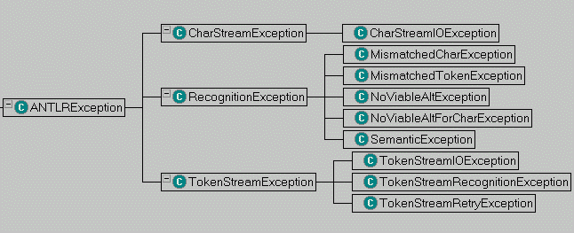

All syntactic and semantic errors cause parser exceptions to be thrown. In particular, the methods used to match tokens in the parser base class (match et al) throw MismatchedTokenException. If the lookahead predicts no alternative of a production in either the parser or lexer, then a NoViableAltException is thrown. The methods in the lexer base class used to match characters (match et al) throw analogous exceptions.
ANTLR will generate default error-handling code, or you may specify your own exception handlers. Either case results (where supported by the language) in the creation of a try/catch block. Such try{} blocks surround the generated code for the grammar element of interest (rule, alternate, token reference, or rule reference). If no exception handlers (default or otherwise) are specified, then the exception will propagate all the way out of the parser to the calling program.
ANTLR's default exception handling is good to get something working, but you will have more control over error-reporting and resynchronization if you write your own exception handlers.
Note that the '@' exception specification of PCCTS 1.33 does not apply to ANTLR.
ANTLR-generated parsers throw exceptions to signal recognition errors or other stream problems. All exceptions derive from ANTLRException. The following diagram shows the hierarchy:

| Exception | Description |
|---|---|
| ANTLRException | Root of the exception hiearchy. You can directly subclass this if you want to define your own exceptions unless they live more properly under one of the specific exceptions below. |
| CharStreamException | Something bad that happens on the character input stream. Most of the time it will be an IO problem, but you could define an exception for input coming from a dialog box or whatever. |
| CharStreamIOException | The character input stream had an IO exception (e.g., CharBuffer.fill() can throw this). If nextToken() sees this, it will convert it to a TokenStreamIOException. |
| RecognitionException | A generic recognition problem with the input. Use this as your "catch all" exception in your main() or other method that invokes a parser, lexer, or treeparser. All parser rules throw this exception. |
| MismatchedCharException | Thrown by CharScanner.match() when it is looking for a character, but finds a different one on the input stream. |
| MismatchedTokenException | Thrown by Parser.match() when it is looking for a token, but finds a different one on the input stream. |
| NoViableAltException | The parser finds an unexpected token; that is, it finds a token that does not begin any alternative in the current decision. |
| NoViableAltForCharException | The lexer finds an unexpected character; that is, it finds a character that does not begin any alternative in the current decision. |
| SemanticException | Used to indicate syntactically valid, but nonsensical or otherwise bogus
input was found on the input stream. This exception is thrown automatically by
failed, validating semantic predicates such as:a : A {false}? B ;
ANTLR generates: match(A);
if (!(false)) throw new
SemanticException("false");
match(B);
You can throw this exception yourself during the parse if one of your actions determines that the input is wacked. |
| TokenStreamException | Indicates that something went wrong while generating a stream of tokens. |
| TokenStreamIOException | Wraps an IOException in a TokenStreamException |
| TokenStreamRecognitionException | Wraps a RecognitionException in a TokenStreamException so you can pass it along on a stream. |
| TokenStreamRetryException | Signals aborted recognition of current token. Try to get one again. Used
by TokenStreamSelector.retry() to force nextToken() of stream to re-enter and retry. See the
examples/java/includeFile directory. This a great way to handle nested include files and so on or to try out multiple grammars to see which appears to fit the data. You can have something listen on a socket for multiple input types without knowing which type will show up when. |
The typical main or parser invoker has try-catch around the invocation:
try {
...
}
catch(TokenStreamException e) {
System.err.println("problem with stream: "+e);
}
catch(RecognitionException re) {
System.err.println("bad input: "+re);
}
Lexer rules throw RecognitionException, CharStreamException, and TokenStreamException.
Parser rules throw RecognitionException and TokenStreamException.
The name or definition of a token in your lexer is rarely meaningful to the user of your recognizer or translator. For example, instead of seeing
T.java:1:9: expecting ID, found ';'
you can have the parser generate:
T.java:1:9: expecting an identifier, found ';'
ANTLR provides an easy way to specify a string to use in place of the token name. In the definition for ID, use the paraphrase option:
ID
options {
paraphrase = "an identifier";
}
: ('a'..'z'|'A'..'Z'|'_')
('a'..'z'|'A'..'Z'|'_'|'0'..'9')*
;
Note that this paraphrase goes into the token types text file (ANTLR's persistence file). In other words, a grammar that uses this vocabulary will also use the paraphrase.
ANTLR generates recursive-descent recognizers. Since recursive-descent recognizers operate by recursively calling the rule-matching methods, this results in a call stack that is populated by the contexts of the recursive-descent methods. Parser exception handling for grammar rules is a lot like exception handling in a language like C++ or Java. Namely, when an exception is thrown, the normal thread of execution is stopped, and functions on the call stack are exited sequentially until one is encountered that wants to catch the exception. When an exception is caught, execution resumes at that point.
In ANTLR, parser exceptions are thrown when (a) there is a syntax error, (b) there is a failed validating semantic predicate, or (c) you throw a parser exception from an action.
In all cases, the recursive-descent functions on the call stack are exited until an exception handler is encountered for that exception type or one of its base classes (in non-object-oriented languages, the hierarchy of execption types is not implemented by a class hierarchy). Exception handlers arise in one of two ways. First, if you do nothing, ANTLR will generate a default exception handler for every parser rule. The default exception handler will report an error, sync to the follow set of the rule, and return from that rule. Second, you may specify your own exception handlers in a variety of ways, as described later.
If you specify an exception handler for a rule, then the default exception handler is not generated for that rule. In addition, you may control the generation of default exception handlers with a per-grammar or per-rule option.
You may attach exception handlers to a rule, an alternative, or a labeled element. The general form for specifying an exception handler is:
exception [label]
catch [exceptionType exceptionVariable]
{ action }
catch ...
catch ...
where the label is only used for attaching exceptions to labeled elements. The exceptionType is the exception (or class of exceptions) to catch, and the exceptionVariable is the variable name of the caught exception, so that the action can process the exception if desired. Here is an example that catches an exception for the rule, for an alternate and for a labeled element:
rule: a:A B C
| D E
exception // for alternate
catch [RecognitionException ex] {
reportError(ex.toString());
}
;
exception // for rule
catch [RecognitionException ex] {
reportError(ex.toString());
}
exception[a] // for a:A
catch [RecognitionException ex] {
reportError(ex.toString());
}
Note that exceptions attached to alternates and labeled elements do not cause the rule to exit. Matching and control flow continues as if the error had not occurred. Because of this, you must be careful not to use any variables that would have been set by a successful match when an exception is caught.
Normally you want the lexer to keep trying to get a valid token upon lexical error. That way, the parser doesn't have to deal with lexical errors and ask for another token. Sometimes you want exceptions to pop out of the lexer--usually when you want to abort the entire parsing process upon syntax error. To get ANTLR to generate lexers that pass on RecognitionException's to the parser as TokenStreamException's, use the defaultErrorHandler=false grammar option. Note that IO exceptions are passed back as TokenStreamIOException's regardless of this option.
Here is an example that uses a bogus semantic exception (which is a subclass of RecognitionException) to demonstrate blasting out of the lexer:
class P extends Parser;
{
public static void main(String[] args) {
L lexer = new L(System.in);
P parser = new P(lexer);
try {
parser.start();
}
catch (Exception e) {
System.err.println(e);
}
}
}
start : "int" ID (COMMA ID)* SEMI ;
class L extends Lexer;
options {
defaultErrorHandler=false;
}
{int x=1;}
ID : ('a'..'z')+ ;
SEMI: ';'
{if ( expr )
throw new
SemanticException("test",
getFilename(),
getLine());} ;
COMMA:',' ;
WS : (' '|'\n'{newline();})+
{$setType(Token.SKIP);}
;
When you type in, say, "int b;" you get the following as output:
antlr.TokenStreamRecognitionException: test
Version: $Id: //depot/code/org.antlr/release/antlr-2.7.5/doc/err.html#1 $